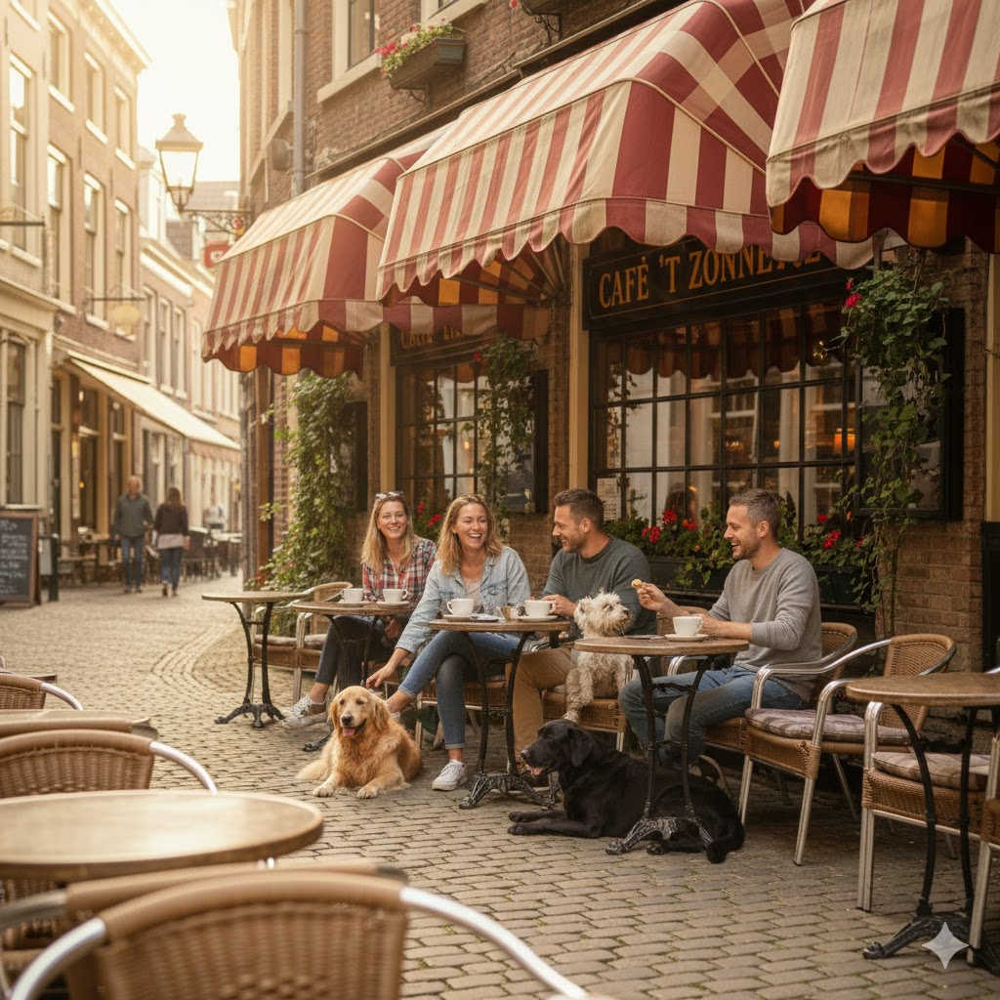

Waarom een terras belangrijk is voor hondeneigenaren
Veel hondeneigenaren kiezen liever voor een terras dan voor een plek binnen. Buiten is er meer ruimte, minder prikkels en kan de hond rustig naast je liggen. Vooral op zonnige dagen is het fijn om een café te vinden waar ook genoeg schaduw is, zodat je hond niet oververhit raakt.
Voordelen van hondvriendelijke terrassen
Niet elk terras is geschikt voor honden. Daarom hebben we een selectie gemaakt van cafés die zowel hondvriendelijk zijn als praktische voordelen bieden voor baas en dier.
Waar letten we op in dit overzicht?
- Ruimte: voldoende plek zodat je hond niet in de weg ligt.
- Schaduw: parasols, bomen of luifels die bescherming bieden.
- Rustige ligging: niet direct aan drukke wegen of fietspaden.
- Gastvrijheid: personeel dat honden welkom heet.
Onze tips voor terrassen in Alkmaar
Op de kaart en in de lijst hieronder vind je koffiestops met ruime
terrassen waar honden welkom zijn. Deze plekken zijn ideaal voor een
pauze tijdens je wandeling. Lijst met voorbeeldplekken:
1. Café De Waag – groot terras met uitzicht op het Waagplein,
veel schaduw.
2. Parkzicht Koffiebar – direct naast het stadspark, rustige
ligging.
3. Brasserie Het Kanaal – ruim terras langs het water, honden
welkom.
Praktische tips voor een terrasbezoek met je hond
Een koffiepauze met je hond is nog leuker als je goed voorbereid bent. Neem eventueel een kleedje mee waar je hond op kan liggen en zorg zelf voor water als het warm is. Houd ook rekening met andere gasten: niet iedereen is een hondenliefhebber.